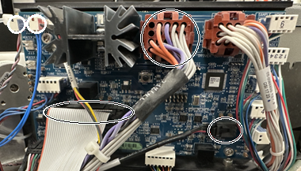
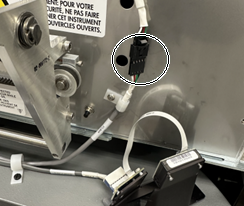
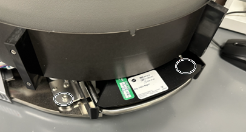
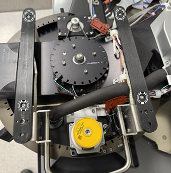
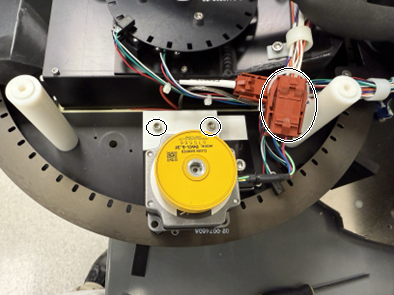
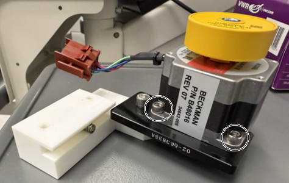
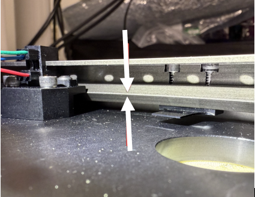

This topic includes information about how to replace the sample carousel drive motor.
Caution: When servicing equipment it is important to recognize potential exposure to blood borne pathogens and to apply all BCI safety precautions. Use personal protective equipment and properly dispose of used parts.
Removing the Sample Carousel Drive Motor
Perform this procedure to remove the sample carousel drive motor.
Place towels in the location of the work area where you plan to set aside the sample carousel module after you remove it.
Remove any onboard sample racks.
Remove any onboard reagent packs and store them in a refrigerated location.
Turn off the instrument using the main power switch on the right side of the instrument.
Disconnect the waste bag from the waste chute.
Remove the instrument upper and lower front covers.
Remove the sample and reagent carousels module.
Disconnect the connectors from the sample/reagent module interface PCB.
Figure 100:

J1 - Ribbon cable
J12 - Vacuum valve
J16 - Temperature cable
J18 - System Power Harness
J20 - Fan power
If present, disconnect the light bar connector.
Figure 101:

Remove the two screws that secure the module support rails to the instrument base.
Figure 102:

Lift the module up slightly to release it from its alignment pins, and then slide the module out of the instrument.
Caution: The newer sample/reagent module interface PCB has a large heat sink. The center bracket might impede your ability to move the module safely. Therefore, move the module slowly, and remove the center bracket, if necessary.
Important: To minimize the risk of damaging the sample carousel index sensor, avoid contact with the sample carousel when you set the carousel module aside in the work area.
Place the carousel module onto the towels that you placed in the work area, so that they can absorb any residual moisture that might drain out. If necessary, invert the module over a sink to drain any condensation from the module.
Invert the module.
Remove the screws that secure the side rails to the module.
Note: Leave the handle and ground straps attached to the rails.
Figure 103:

Remove the two screws that secure the drain line and remove the drain line.
Disconnect the power cable for the sample carousel motor, and then while compressing the motor toward the white pivot bracket, remove the two screws from the white pivot bracket.
Figure 104:

Remove the sample carousel motor and bracket assembly.
Note: Be careful not to lose the spring from the white pivot bracket.
Inspect the sample carousel home and index sensors for damage. If they are damaged, replace them.
Remove the two screws that secure the sample carousel motor to the motor bracket.
Figure 105:

Discard the motor.
Installing the Sample Carousel Motor
Perform this procedure to install the sample carousel motor.
Fasten the two screws to secure the new sample carousel motor to the motor bracket.
Note: Refer to the image below to see how to orient the motor and how to place the spring within the white pivot bracket.
Figure 106:
While compressing the motor toward the white pivot bracket, fasten the two screws into the bracket to secure the sample carousel motor and bracket assembly onto the carousel assembly.
Figure 107:
Connect the power cable for the sample carousel motor.
Verify the sample carousel motor v-drive wheel is seated onto the inner ridge of the sample carousel.
Figure 108:

Fasten the two screws to attach the drain line.
Fasten the screws that secure the side rails to the module.
Figure 109:
Invert the module and fasten the four screws for the reagent carousel cover.
Fasten the two screws that secure the module support rails to the instrument base.
Figure 110:
Reconnect the connectors to the sample/reagent module interface PCB.
Figure 111:
J1 - Ribbon cable
J12 - Vacuum valve
J16 - Temperature cable
J18 - System Power Harness
J20 - Fan power
If present, reconnect the light bar connector.
Figure 112:
Attach the instrument upper and lower front covers.
Reconnect the waste bag to the waste chute.
Insert the interlock switch bypass key.
Turn on the instrument using the main power switch on the right side of the instrument.
Align the sample carousel to the main pipettor probe, barcode reader, and cup/tube detector positions. See
Adjusting and Aligning Sample Carousel for more information.